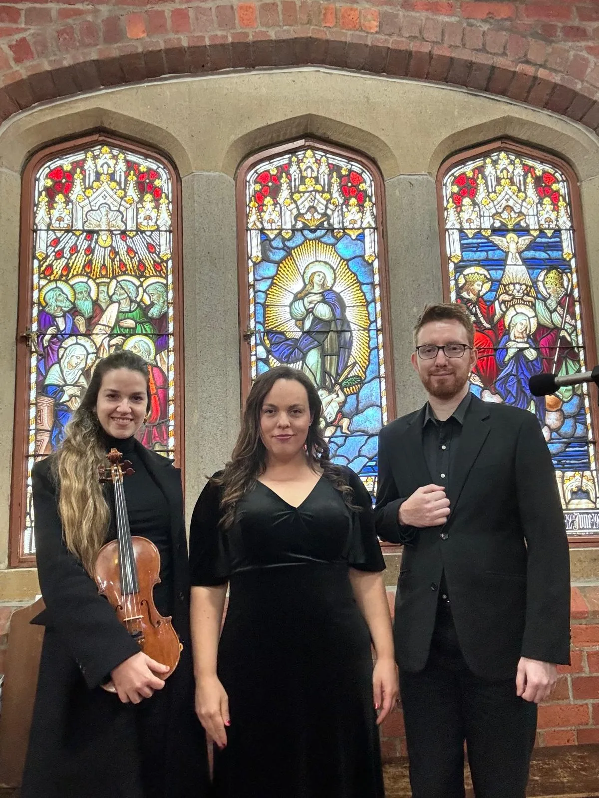

Funeral Programs
Natalie Claire and her funeral musicians can bring the celebration and solace of beautiful music to any funeral service, whether religious, non-religious, church or crematorium. Natalie can perform at key points in the service, or just lead everyone in the hymns in case nobody feels much like singing themselves.
Prelude
Performed before the service, this music provides a gentle welcome for family and friends. You may prefer quiet music from the organ or violin. We usually perform 20 mins instrumental here.
Entrance Song
This can be a song or hymn to gather attention, or to accompany the funeral procession as it enters the church or chapel. Music ideas: ‘Ave Maria’ or ‘Amazing Grace’.
Offertory Hymn
A psalm is often sung after a reading, allowing a moment for reflection. One of the most popular psalms is ‘The Lord is My Shepherd’.
Communion Hymn
A hymns may be sung here, giving family and friends a chance to sing too. Two songs may be required if you have a large congregation receiving communion. Popular hymns: ‘On Eagles Wings’ and ‘Abide with Me’.
Song During Slideshow
A special song could be performed during a slideshow. Music ideas: ‘How Great Thou Art’ or ‘Danny Boy’.
Recessional
As the funeral procession departs, you may like a positive, uplifting song to accompany this. Music ideas ‘Time to Say Goodbye’ or ‘You’ll Never Walk Alone.’
Prelude
This happens before the services starts, to give a calming welcome in music for friends and family. Instrumental music or a soft song would be appropriate here.
Procession
As the funeral procession enters the chapel. Music ideas: ‘Morning Has Broken’ or ‘Fields of Gold’.
During
A favourite song during the service.
Hymns
This is optional as you may prefer no religious music at all.
Committal
In some services, a piece is performed as a period of reflection. Music ideas: ‘The Rose’ or ‘The Last Rose of Summer’.
Recessional
To conclude the service, a joyous song to confirm the celebration of their loved one’s life. Music ideas ‘You Raise Me Up’ or ‘Wind Beneath My Wings’.
You might like a special song performed by strings or choir during this time.
Email natalie@natalieclaire.com.au or text 0415 796 095 for an immediate response.